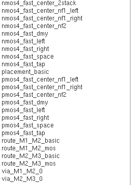
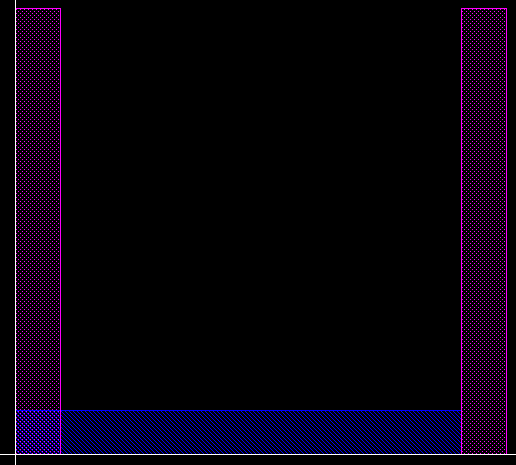

Laygo practice labs¶
This document illustrates procedures for running training modules of laygo. The training modules(labs) are written to help users to get used to the laygo layout generation flow.
Basically, the entire lab is composed of 2 parts. The first part is generating layout on physical grids. After completing lab 1, users will understand the fundemental layout generation flow of laygo. The second part is generating layout on abstracted grid. Users will build custom templates for their process, build template and grid database, and place/route objects on their grids.
Each part has several submodules as follows,
Lab1-a : layout export on physical grid
Lab1-b : layout import on physical grid
Lab2-a : construct template DB on abstract grid
Lab2-b : layout export on abstract grid
Lab2-c : logic family template generation
Lab2-d : 2:1 MUX generation on abstract grid
The functions used in the lab modules will be used for layout generation of real designs. Please make sure users understand how they work and what their inputs/return values are. More complete generator example will be found here
Installation¶
Before doing the lab modules, users need to install bag setup for their specific technology. Please note that bag/laygo does not provide any technology sensitive information to external users without proper legal agreements.
Installation procedure is explained here
After finishing bag setup, clone this repo or make a symbolic link in your bag working directory.
Copy or make symbolic links of lab scripts from labs/
Clone laygo_{technology_name} repo to your bag working directory. The repo contains technology specific information and not distributed in public domain.
Copy
laygo_config.yamlfrom laygo_{technology_name} to your bag working directory. If you don’t have one, you can create it by yourself. The syntax is as follows.metal_layers: - [metal0_layer_name, metal0_layer_purpose] - [metal1_layer_name, metal1_layer_purpose] - [metal2_layer_name, metal2_layer_purpose] - [metal3_layer_name, metal3_layer_purpose] ... pin_layers: - [text_layer_name, text_layer_purpose] - [pin1_layer_name, pin1_layer_purpose] - [pin2_layer_name, pin2_layer_purpose] - [pin3_layer_name, pin3_layer_purpose] ... prboundary_layer: [prboundary_layer name, prboundary_layer_purpose] tech_lib: technology_name text_layer: [text_layer_name, text_layer_purpose] physical_resolution: physical_grid_resolution
Add
cds.libdefinition of laygo_{technology_name}/{technology_name}_microtemplates_dense This library contains primitive templates and grid cells. Example is as follows`DEFINE {technology_name}_microtemplates_dense ./laygo_{technology_name}/{technology_name}_microtemplates_dense`(optional) copy those files from laygo_{technology_name} to bag working dir laygo_{technology_name}/{technology_name}_microtemplates_dense_templates.yaml laygo_{technology_name}/{technology_name}_microtemplates_dense_grids.yaml Those files contain template and grid information. This step is optional because user can generate those files in lab2_a
Running the Lab - BAG flow¶
Open virtuoso and run bag. You’ll see primitive cells in {technology_name}_microtemplates_dense
template library
Open
nmos4_fast_center_2stack. You can see an example primitive template of nmos transistor. nmos4 template
nmos4 templateThe example image is captured from NCSU-FreePDK45 setup.
Make an empty library ‘laygo_working’. This is the working library throught the entire lab. Laygo does not generate libraries automatically. Users need to create working libraries manually or via bag interface.
You are ready to run the lab. Run bag and type
run laygo/labs/lab1_a_baselayoutgenerator_export.py
It should create 2 cells in laygo_working. _generate_example_1 should look like this.
template library
Running the Lab - GDS flow¶
Instead of exporting the design to BAG, laygo can export the output to a gds file.
Prepare the layermap file of given technology and make a symbolic link in the working directory. Usually the layermap can be found in the technology library folder.
Prepare the gds file of primitive microtemplates and locate it in the working directory.
If you don’t have any technology setup, use the default fake technology files in labs. Copy them to the working directory
laygo_config.yaml- laygo configure file for fake technologylaygo10n_microtemplates_dense_templates.yaml- laygo template database for fake tech.laygo10n_microtemplates_dense_grid.yaml- laygo grid database for fake tech.If you use fake tech, you can’t run lab2_a because there’s no real gds file for theh fake technology. Use the template/grid database for following labs instead of constructing it in lab2_a
Make symbolic links of lab files in the working directory.
Run lab1_a and open the resulting gds file. You should see this layout. Used KLayout for gds display.
 gds
gds